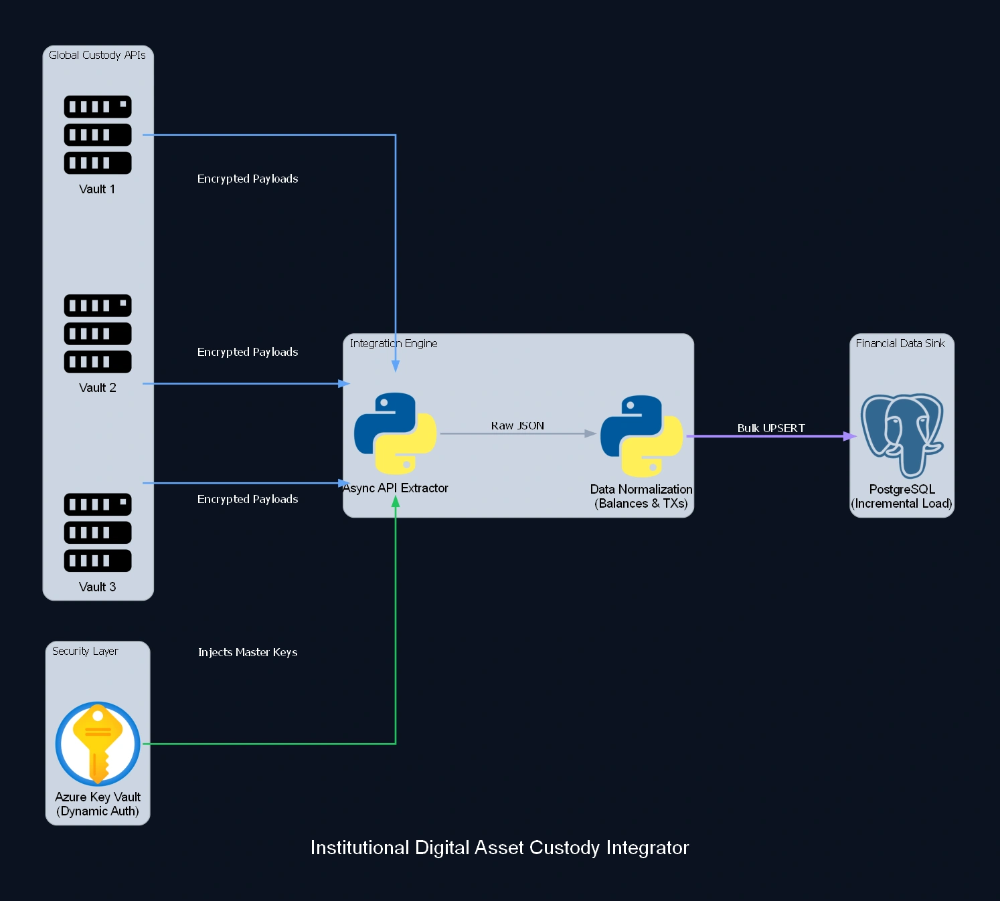

Institutional Digital Asset Custody Integrator
Arquitetura de integração distribuída para gerenciamento de custódia institucional de criptoativos. Implementei uma camada de abstração para orquestrar APIs mestras globais, garantindo a captura segregada de dados transacionais por região de operação. O sistema foca em alta segurança no tráfego de secrets e padronização de schemas para conformidade com auditorias internacionais de FinOps.

Estudo de caso
Problema
Fragmentação regional de dados e complexidade na gestão de múltiplas chaves de custódia de alto valor.
Solução
Unificação de pipelines regionais sob um orquestrador centralizado com isolamento de metadados.
Impacto
Redução de falhas de conciliação regional e centralização total da visibilidade de ativos sob custódia.